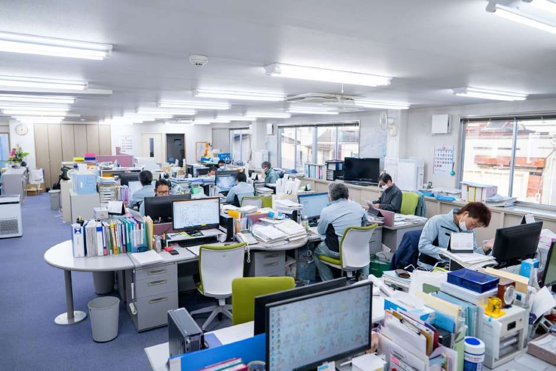
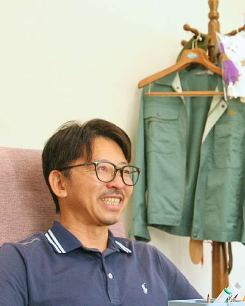
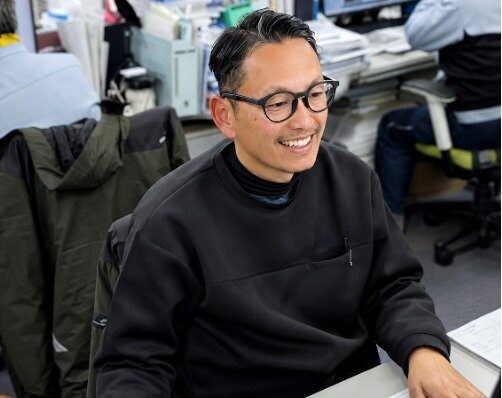
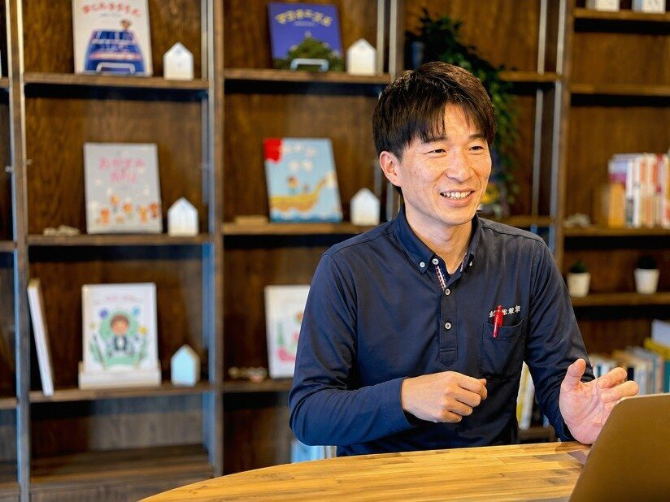
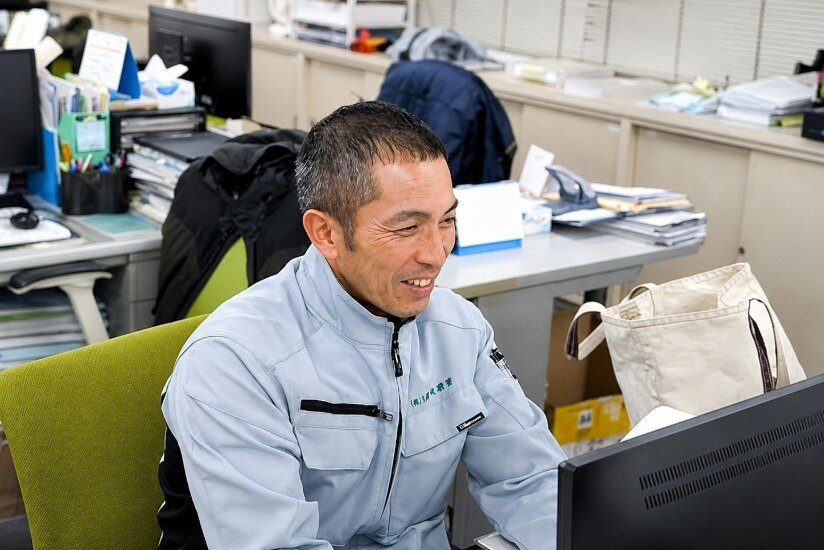

現場を約30年見てきた班長。
ガス関係の個人事業主を経て久留米興業へ。現場の段取りや役割分担を担い、班全体を見ながら仕事を進めています。新人には最初から全部できることを求めず、毎日現場で流れを知り、少しずつ覚えてほしいという考えを話しています。
「まずは、毎日来ることじゃないですかね。」
OUR PEOPLE 働くスタッフ
入社のきっかけも、得意なことも、これまで歩んできた道も違う。そんな人たちが、道路や水道の仕事を一緒に進めています。まずは、久留米興業で働く人を知ってください。

「人がいい会社です」と言うだけでは、働く姿は見えてきません。最初は専門用語が分からなかった人。別の業界から飛び込み、資格を取得した人。現場で30年近く、仲間と1日をやり切ってきた人。久留米興業には、それぞれ違う経験を持つ社員がいます。うまくいったことも、難しかったことも、本人の経験に沿ってお伝えします。

代表取締役 川島 和範
REPRESENTATIVE 代表
川島は18歳で久留米興業に入り、現場の見習いから仕事を始めました。休みの少なかった時代には働く意味を見失い、24歳で一度会社を離れた経験もあります。再び戻ってから現場、管理、取引先との折衝、経営へと役割を広げてきました。今は、会社として続けるべき仕事を守りながら、働く人が長く続けられる環境をどうつくるかを考えています。
残業時間の管理や、現場で一人にかかる負担を分散するための人員配置など、少しずつ仕組みを見直してきました。課題がすべて解決したわけではありませんが、現場を経験してきたからこそ、働き方を変え続ける必要を感じています。
SALES 営業職
久留米興業の営業職は、商品を売り込むことだけが役割ではありません。取引先の相談を受け、現場や協力会社と連携しながら、工事を前に進めます。営業に携わる社員の入社理由や経験を知ると、ここで身につく仕事の幅も見えてきます。

お茶の営業に約12年携わった後、将来に残る専門性を求めて土木の世界へ。未経験から現場で学び、1級土木施工管理技士を取得し、現在は公共工事の現場代理人として現場を動かしています。
インタビュー全文を読む ↗
大学では土木以外の分野を学び、業界知識のない状態で入社。最初は用語も現場のルールも分からない中、先輩の仕事に同行し、少しずつ学んできました。社長や先輩の人柄に惹かれたことが入社の決め手だったと話しています。
インタビュー全文を読む ↗
広告業界での長い労働時間から、次の働き方と専門性を考えて転職。工事に関する知識を現場で学び、職人との対話を重ねながら仕事の進め方を身につけてきました。未経験者だからこその難しさも率直に話しています。
インタビュー全文を読む ↗FIELD 現場職
道路工事の現場では、毎日その日の作業を終えるために、一人ひとりが持ち場を担当します。作業中の会話は多くなくても、危険があれば声を掛け、分からないことがあれば聞き、必要なときには手を貸し合う。現場の二人は、そんな仕事の進め方を率直に語っています。

ガス関係の個人事業主を経て久留米興業へ。現場の段取りや役割分担を担い、班全体を見ながら仕事を進めています。新人には最初から全部できることを求めず、毎日現場で流れを知り、少しずつ覚えてほしいという考えを話しています。
「まずは、毎日来ることじゃないですかね。」
建築分野での躯体・外構などの経験を経て入社。久留米興業で初めて土木の現場を経験し、先輩や班長の動きを見たり、分からないことを聞いたりしながら仕事を覚えてきました。仕事の大変さだけでなく、日々の役割が少しずつ分かる過程も話しています。
「最初から全部できなくてもいい。」
現場には、夏の暑さや夜間の作業、時間内に終えなければならない大変さがあります。松野さんと奥居さんは、余裕を持って1日を終えられる働き方への思いも率直に語っています。
お二人の本人写真は未提供のため、顔や服装を描かず文字カードで表示しています。写真が届いたら差し替えます。
【非表示】#people-support（事務・総務など、その他部署の紹介）は、実名インタビューと写真の承認がそろってから表示します。
COLLABORATION 役割のつながり
相談を受ける人、段取りを組む人、現場で施工する人、書類や連絡を支える人。担当は違っても、同じ工事の完成に向けて情報をつないでいます。

工事の相談、工期・場所の条件
現地の確認、見積、段取り、協力会社との連絡
安全確認、役割分担、実際の施工
書類・工程情報・社内調整の支援
「売る人」と「作る人」ではない。工事を最後までつなぐ仲間です。
REALITY 仕事の実際

先輩との同行や現地調査、取引先・現場社員との対話を通じて段取りを覚えます。最初は何が分からないのかも分からなかった、と話す社員もいます。
暑さや夜間作業などの負担があり、休憩に余裕を感じられない日があるという声もあります。慣れないうちは、班長や先輩に聞きながら覚えていきます。
働き方や負担は、職種、担当業務、現場の状況によって異なります。実際の勤務条件は募集要項をご確認ください。
【非表示】#people-data（社員の構成）は、集計日・対象範囲が確認できた数字が届いてから表示します。社員数は37名・30名と公開情報に差があるため、現時点では載せていません。
NEXT
未経験で入った人にも、長く現場に立ち続ける人にも、それぞれの始まりがあります。仕事内容と募集条件を確かめながら、自分に合う働き方を考えてみてください。